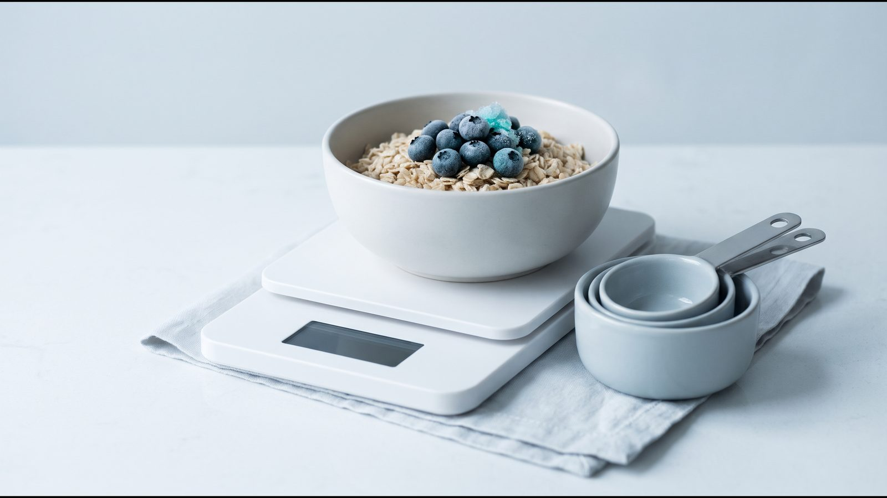
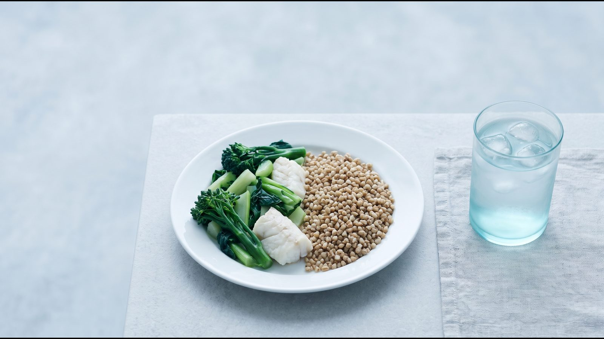
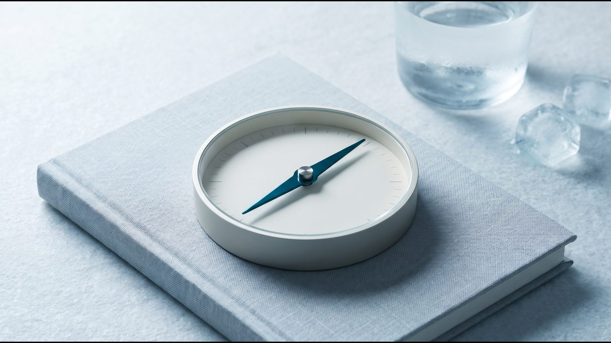

Калькулятор калорій для схуднення: безпечний діапазон

Як користуватися калькулятором
Калькулятор калорій для схуднення спершу рахує добову норму калорій, тобто скільки енергії ви витрачаєте за добу, а потім раціон із помірним дефіцитом. Від норми він віднімає 600 ккал, як радить NHS, і не опускає результат нижче 1 200 ккал для жінок і 1 500 ккал для чоловіків. Результат показано діапазоном, бо формула має похибку близько 10 %.
Що ввести. Щоб розрахувати калорії для схуднення, калькулятор спершу запитає про стани, за яких розрахунок не підходить (перелік нижче), потім про стать, вік, зріст, вагу і рівень активності.
Рівень активності. Рівні, їхні межі і коефіцієнти для кожного способу життя взято зі звіту FAO/WHO/UNU (2004).
| Рівень (межі FAO) | Як це виглядає за FAO | Коефіцієнт |
|---|---|---|
| Малорухливий або легка активність (1,40–1,69) | робота без значних фізичних зусиль, транспорт, без регулярних тренувань, дозвілля здебільшого сидячи | 1,55 |
| Активний або помірно активний (1,70–1,99) | сидяча робота і щодня близько години помірних чи інтенсивних вправ (біг, велосипед, спорт) або робота з постійним рухом, як на будівництві | 1,75 |
| Високоактивний (2,00–2,40) | кілька годин важкої фізичної праці або близько 2 годин плавання чи танців щодня за несидячої роботи | 2,25 |
Як читати результат. Перший рядок показує, скільки калорій потрібно, щоб вага трималася, другий показує, скільки калорій потрібно для схуднення. Якщо дефіцит опускає раціон нижче 1 200 ккал (жінки) чи 1 500 ккал (чоловіки), калькулятор піднімає нижню межу до цього рівня.
Звідки цифри
Добову норму рахують у два кроки: витрату енергії в спокої (скільки організм витрачає за добу без руху) множать на коефіцієнт активності.
Формула Міффліна–Сан Жеора. Її вивели в 1990 році на 498 здорових людях 19–78 років, із яких 234 мали ожиріння (Mifflin, Am J Clin Nutr 1990). Простими словами: кожен кілограм ваги додає до витрати 10 ккал, кожен сантиметр зросту — 6,25 ккал, а кожен рік віку віднімає 5 ккал. Для чоловіків до суми додають 5 ккал, для жінок віднімають 161 ккал.
Приклад. Жінка 40 років, зріст 165 см, вага 85 кг: 850 + 1 031 − 200 − 161 ≈ 1 520 ккал у спокої. За малорухливого способу життя (1,55) це близько 2 360 ккал, а з похибкою ±10 % норма для підтримки ваги становить 2 100–2 600 ккал. Для схуднення калькулятор віднімає 600 ккал і показує 1 500–2 000 ккал на добу.
Наскільки точна формула. Систематичний огляд Frankenfield (J Am Diet Assoc, 2005) назвав її найнадійнішою з порівняних. У перевірці Frankenfield (Clin Nutr, 2013) вона вклалася в 10 % від виміряної витрати у 87 % людей без ожиріння і в 75 % з ожирінням, помиляючись в обидва боки.
Коефіцієнт активності. FAO/WHO/UNU множить його на основний обмін, а формула дає витрату в спокої, тож результат наближений. Діапазон ±10 % покриває похибку формули; розкид усередині рівня активності, за FAO, додає ще до ±8–10 %, тому звіряйте розрахунок із динамікою ваги.
Безпечний дефіцит і нижня межа
Дефіцит калорій у калькуляторі становить 600 ккал на добу: NHS називає таке зменшення раціону безпечним і стійким. Американські настанови AHA/ACC/TOS (2013) пропонують дефіцит 500 або 750 ккал чи раціон 1 200–1 500 ккал для жінок і 1 500–1 800 ккал для чоловіків. Нижче 1 200 і 1 500 ккал калькулятор не опускається: це наш висновок із цих настанов, а не окрема офіційна норма.
За NICE NG246 (2025), раціон 800–1 200 ккал на добу розглядають лише в спеціалізованій службі, а менше 800 ккал тільки за клінічної потреби швидко схуднути, наприклад перед операцією. Обидва варіанти мають бути повноцінними за складом і тривати не довше 12 тижнів, а як довгострокову стратегію NICE не рекомендує жоден.
Різке зменшення калорій підвищує ризик жовчних каменів (NIDDK) і втрати м'язів (Vink, Obesity 2016); докладніше на сторінці калькулятора строку схуднення.
Харчування без підрахунку калорій: метод тарілки
Рахувати калорії не обов'язково. Головна умова за NICE NG246 — щоб енергії надходило менше, ніж витрачається; метод тарілки (Harvard Healthy Eating Plate) допомагає цього досягти без цифр.

- половина тарілки — овочі й фрукти (картопля до овочів не належить);
- чверть — цільнозернові крупи, хліб чи макарони;
- чверть — риба, птиця, бобові, горіхи; червоне м'ясо обмежити, перероблене прибрати;
- напої — вода, чай, кава без цукру; сік не більше маленької склянки на день.
Меню на тиждень з українських продуктів є в статті харчування для схуднення.
Чому дефіцит важко втримати довго
Голод. Апетит під час дефіциту залежить від сну, складу їжі і режиму; способи з доказами розібрано в статті постійно хочеться їсти.
Адаптація. Організм частково пристосовується до меншої ваги, але типове плато через 6–8 місяців модель Hall (Lancet, 2011) більше пов'язує з тим, що раціону з часом важче дотримуватися.
Облік. У дослідженні Lichtman (NEJM, 1992) люди з ожирінням, яким не вдавалося схуднути, недооцінювали з'їдене в середньому на 47 %. Тому, якщо вага не змінюється, спершу перевірте облік, а не зменшуйте раціон ще більше; як це зробити, описано в статті вага стоїть на місці.
Повсякденне життя. Жорсткий план без місця для свят і спільних застіль важко тримати місяцями.
Кому розрахунок не підходить
Формулу виводили на здорових дорослих 19–78 років. Якщо щось із переліку стосується вас, калькулятор не покаже цифр і порадить звернутися до лікаря.
- Вагітність. За FAO/WHO/UNU (2004), потреба в енергії зростає приблизно на 85, 285 і 475 ккал на добу в першому, другому і третьому триместрі.
- Годування груддю. У перші 6 місяців лактації FAO радить добре харчованим жінкам додавати до раціону близько 505 ккал на добу (розрахунок FAO зроблено для виключно грудного вигодовування).
- Розлад харчової поведінки зараз або в минулому. NICE NG246 радить оцінювати такі розлади перед низькокалорійними дієтами і враховувати їх під час вибору лікування.
- Діабет, який лікують інсуліном або препаратами сульфонілсечовини. За AHA/ACC/TOS (2013), у людей з діабетом 2 типу схуднення на 5–10 % пов'язане зі зниженням глікованого гемоглобіну (HbA1c) на 0,6–1,0 % і меншою потребою в цукрознижувальних ліках. Дози при цьому коригує лікар.
- Вік до 18 років. Вагу дітей і підлітків оцінюють за віковими таблицями ВООЗ або центильними кривими NICE, а формулу перевіряли тільки на дорослих.
Людям 65 років і старшим калькулятор покаже результат, але план краще обговорити з лікарем: NICE радить обережно тлумачити ІМТ у цьому віці і звертає увагу на ризик недостатнього харчування.
Часті запитання
Скільки калорій потрібно, щоб скидати 0,5 кг на тиждень?
Рахують від вашої норми: NHS радить худнути на 0,5–1 кг на тиждень, а раціон зменшувати приблизно на 600 ккал на добу. Класичне правило «500 ккал на добу дають 0,5 кг на тиждень» (NHLBI, 1998) завищує прогноз, і що довше, то більша похибка, бо організм пристосовується (Hall, Lancet 2011). Строки для своєї цілі оцініть у калькуляторі строку схуднення.
Чи можна дефіцит 1000 ккал?
У багатьох людей мінус 1 000 ккал опускає раціон нижче 1 200 ккал (жінки) чи 1 500 ккал (чоловіки), тож калькулятор такого дефіциту не пропонує. Раціон 800–1 200 ккал NICE (2025) допускає лише в спеціалізованій службі, а менше 800 ккал, за AHA/ACC/TOS (2013), лише під медичним наглядом. Швидший план, якщо він потрібен, складає лікар.
Як врахувати тренування?
Не додавайте калорії за кожне тренування окремо, а оберіть рівень активності за звичайний тиждень. За FAO/WHO/UNU (2004), година помірних чи інтенсивних вправ щодня може підняти коефіцієнт з 1,55 до 1,75, тобто на рівень вище. Учасники дослідження Lichtman (1992) переоцінювали свою активність на 51 %, тож у разі сумніву оберіть нижчий рівень.
Чому вага не йде на дефіциті?
Розрахована норма може бути вищою за реальну: у кожної четвертої людини з ожирінням формула помиляється більш ніж на 10 % (Frankenfield, 2013). Буває, що з'їдене недооцінюється (Lichtman, 1992), а ще вагу маскують коливання води; покроковий розбір є в статті вага стоїть на місці.
Джерела
- Mifflin MD, St Jeor ST, Hill LA et al. A new predictive equation for resting energy expenditure in healthy individuals. Am J Clin Nutr, 1990. https://doi.org/10.1093/ajcn/51.2.241
- Frankenfield D, Roth-Yousey L, Compher C. Comparison of predictive equations for resting metabolic rate in healthy nonobese and obese adults: a systematic review. J Am Diet Assoc, 2005. https://doi.org/10.1016/j.jada.2005.02.005
- Frankenfield DC. Bias and accuracy of resting metabolic rate equations in non-obese and obese adults. Clin Nutr, 2013. https://doi.org/10.1016/j.clnu.2013.03.022
- FAO/WHO/UNU. Human energy requirements. Report of a Joint FAO/WHO/UNU Expert Consultation, 2004: розділи 5, 6, 7. https://www.fao.org/4/y5686e/y5686e07.htm
- NHS Better Health. Calories and weight loss. https://www.nhs.uk/better-health/lose-weight/calorie-counting/
- Jensen MD et al. 2013 AHA/ACC/TOS guideline for the management of overweight and obesity in adults. Circulation, 2014. https://doi.org/10.1161/01.cir.0000437739.71477.ee
- NICE. Overweight and obesity management (NG246), 2025. https://www.nice.org.uk/guidance/ng246
- NHLBI/NIH. Clinical Guidelines on the Identification, Evaluation, and Treatment of Overweight and Obesity in Adults: The Evidence Report, 1998. https://www.nhlbi.nih.gov/files/docs/guidelines/ob_gdlns.pdf
- Hall KD, Sacks G, Chandramohan D et al. Quantification of the effect of energy imbalance on bodyweight. Lancet, 2011. https://doi.org/10.1016/S0140-6736(11)60812-X
- Vink RG et al. The effect of rate of weight loss on long-term weight regain in adults with overweight and obesity. Obesity, 2016. https://doi.org/10.1002/oby.21346
- NIDDK. Dieting & Gallstones, 2017. https://www.niddk.nih.gov/health-information/digestive-diseases/gallstones/dieting
- Harvard T.H. Chan School of Public Health. Healthy Eating Plate. https://nutritionsource.hsph.harvard.edu/healthy-eating-plate/
- Lichtman SW et al. Discrepancy between self-reported and actual caloric intake and exercise in obese subjects. N Engl J Med, 1992. https://doi.org/10.1056/NEJM199212313272701
- WHO. Obesity and overweight. Fact sheet, 2026. https://www.who.int/news-room/fact-sheets/detail/obesity-and-overweight
Матеріал має інформаційний характер і не замінює консультацію лікаря. Препарати призначає лікар після консультації.
Читайте також

